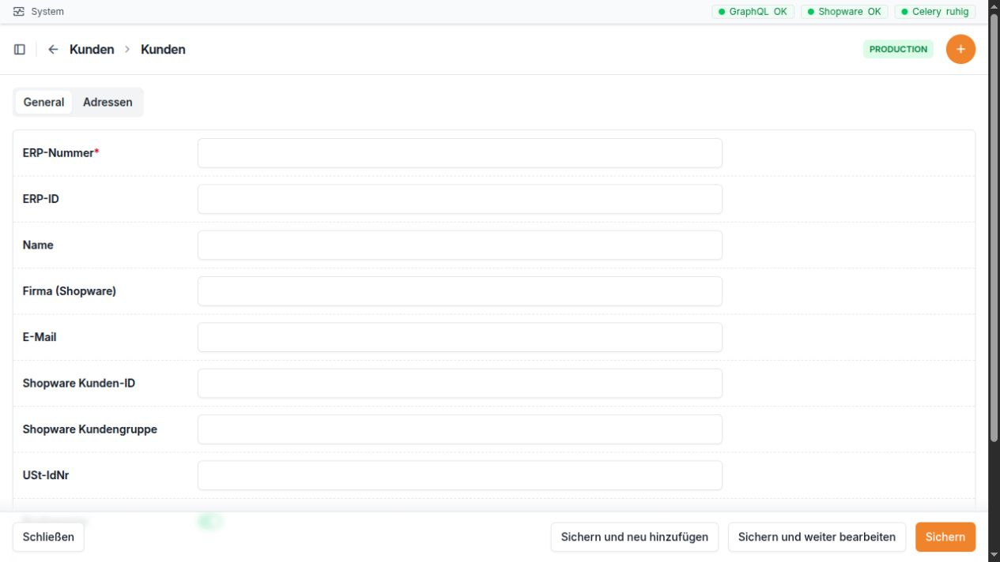

Kunden¶
Wofür ist dieser Bereich da?¶
Im Bereich Kunden verwalten Sie die Kundendaten, die Zuordnung zu Shopware und Microtech sowie Rechnungs- und Lieferanschriften. Die GC-Bridge kann Kundendaten aus Microtech holen oder nach Microtech übertragen.
Unter Kunden zusammenführen vergleichen Sie Daten aus Shopware, GC-Bridge und Microtech. Diese Seite ist für unklare oder doppelte Kundenzuordnungen gedacht.


Die Kundenmaske trennt die allgemeinen Kundendaten von den zugehörigen Adressen. Pflichtfelder sind mit einem Stern markiert.
Die Kundenliste¶
Spalte |
Einfache Erklärung |
|---|---|
ERP-Nummer |
Die AdrNr des Kunden. Sie ist eindeutig und die wichtigste Verbindung zu Microtech. |
Name |
Kurzname des Kunden in der GC-Bridge. |
Haupt-E-Mail-Adresse. |
|
Bruttopreise |
Zeigt, ob Preise für diesen Kunden brutto behandelt werden. |
Angelegt am |
Zeitpunkt, zu dem der Kunde in der GC-Bridge angelegt wurde. |
Die Suche berücksichtigt ERP-Nummer, Name und E-Mail. Filtern können Sie nach Bruttopreise und nach dem Anlagedatum.
Feldbeschreibung des Kunden¶
Feld |
Bedeutung und richtige Verwendung |
|---|---|
ERP-Nummer |
AdrNr des Kunden in Microtech. Sie muss eindeutig sein. Eine falsche Nummer kann Daten dem falschen Kunden zuordnen. |
ERP-ID |
Interne Microtech-Kennung, falls vorhanden. Sie ist nicht dasselbe wie die AdrNr und sollte normalerweise nicht von Hand geändert werden. |
Name |
Anzeigename in der GC-Bridge. |
Firma (Shopware) |
Firmenname, wie er aus dem Shopware-Konto kommt. |
Haupt-E-Mail-Adresse des Kunden. |
|
Shopware Kunden-ID |
Eindeutige interne Kundenkennung in Shopware. Sie verbindet das Shopware-Konto mit diesem Datensatz. |
Shopware Kundengruppe |
Name der Kundengruppe aus Shopware. Er kann Regeln und Steuerbehandlung beeinflussen. |
USt-IdNr |
Umsatzsteuer-Identifikationsnummer. Besonders bei Firmenkunden im Ausland sorgfältig prüfen. |
Bruttopreise |
Aktiv bedeutet, dass Shopware diesen Kunden mit Bruttopreisen führt. |
Angelegt am |
Zeitpunkt der Anlage in der GC-Bridge. Wird automatisch gesetzt. |
Aktualisiert am |
Zeitpunkt der letzten Änderung. Wird automatisch gesetzt. |
Unter dem Kunden werden seine Adressen in einer Tabelle angezeigt. Dort können vorhandene Adressen bearbeitet werden. Die Tabelle zeigt nur einen Teil aller Adressfelder. Für alle Felder öffnen Sie Kunden → Adressen und wählen die betreffende Adresse.
Aktionen für Kunden¶
Aktion |
Wirkung |
Wichtiger Hinweis |
|---|---|---|
Von Microtech synchronisieren |
Holt den Kunden und seine Anschriften anhand der ERP-Nummer aus Microtech in die GC-Bridge. |
Ohne ERP-Nummer ist die Aktion nicht möglich. Lokale Werte können durch die Microtech-Daten ersetzt werden. |
Nach Microtech übertragen |
Legt den Kunden in Microtech an oder aktualisiert ihn. Auch Standard-Rechnungs- und Lieferanschrift werden berücksichtigt. |
Vorher ERP-Nummer, Anschriften und Standardkennzeichen prüfen. |
Beide Aktionen gibt es für einen einzelnen Kunden auf der Detailseite und für markierte Kunden in der Liste. Nach dem Lauf zeigt die Oberfläche eine Erfolgsmeldung oder die betroffenen Fehler.
Feldbeschreibung der Adresse¶
Feld |
Bedeutung und richtige Verwendung |
|---|---|
Kunde |
Kunde, zu dem die Adresse gehört. |
ERP Kombi-ID |
Zusammengesetzte interne Kennung aus Microtech-Werten. Sie wird bei passenden Daten automatisch gebildet und sollte nicht manuell gepflegt werden. |
Shopware Adress-ID |
Eindeutige Kennung dieser Adresse in Shopware. Sie darf bei einem Kunden nicht auf mehrere lokale Adressen zeigen. |
ERP-Nummer |
Numerische AdrNr, zu der die Anschrift gehört. |
Anschrift-ID |
Interne Microtech-Kennung der Anschrift. Nicht mit der sichtbaren Anschrift-Nummer verwechseln. |
Anschrift-Nummer |
Nummer der Anschrift innerhalb des
Microtech-Kunden. Sie wird für den
täglichen Abgleich verwendet. Auch |
Ansprechpartner-ID |
Interne Microtech-Kennung des Ansprechpartners. |
Ansprechpartner-Nummer |
Nummer des Ansprechpartners innerhalb der
Anschrift. Auch |
Firma |
Firmenangabe der Adresse. |
Name 1 |
Erste Namenszeile, häufig Firma oder Anrede. |
Name 2 |
Zweite Namenszeile, häufig Personenname oder Ergänzung. |
Name 3 |
Weitere Namenszeile. |
Abteilung |
Abteilung des Empfängers oder Ansprechpartners. |
Straße |
Straße und Hausnummer. |
PLZ |
Postleitzahl. |
Ort |
Ort. |
Ländercode |
Zweistelliger Ländercode, etwa |
E-Mail-Adresse für diese Anschrift oder diesen Ansprechpartner. |
|
Titel |
Anrede oder Titel. |
Vorname |
Vorname des Ansprechpartners. |
Nachname |
Nachname des Ansprechpartners. |
Telefon |
Telefonnummer. |
Lieferanschrift |
Kennzeichnet die aktuelle Standard-Lieferanschrift dieses Kunden. |
Rechnungsanschrift |
Kennzeichnet die aktuelle Standard-Rechnungsanschrift dieses Kunden. |
Angelegt am |
Zeitpunkt der Anlage. Wird automatisch gesetzt. |
Aktualisiert am |
Zeitpunkt der letzten Änderung. Wird automatisch gesetzt. |
Ein Kunde kann mehrere Adressen haben. Für den normalen Ablauf sollte genau die richtige Adresse als Lieferanschrift und genau die richtige als Rechnungsanschrift gekennzeichnet sein. Beides darf dieselbe Adresse sein.
Die Adressliste¶
Die eigene Adressliste zeigt Kunde, Anschrift-ID, Name 1, Ort, die Kennzeichen für Rechnung und Lieferung sowie das Anlagedatum. Die Suche findet Adressen über AdrNr, Name 1, Name 2, Straße, PLZ und Ort. Filter stehen für Rechnungsanschrift, Lieferanschrift, Ländercode und Anlagedatum bereit.
Kunden zusammenführen und Systemzuordnungen prüfen¶
Der Kunden-Merge: Was passiert dabei?¶
Beim Kunden-Merge werden zwei Shopware-Konten derselben Person oder Firma zu einem Konto zusammengeführt. Sie wählen das richtige Konto, das erhalten bleiben soll, und das zusätzliche Konto, das danach gelöscht wird. Vor der Bestätigung zeigt die Verbindliche Vorschau das geplante Ergebnis.
Ein Kunden-Merge ist sinnvoll, wenn tatsächlich zwei unterschiedliche Shopware-Kunden-IDs zu derselben Person oder Firma gehören. Eine einzige Adresse, die sowohl Rechnung als auch Lieferung ist, ist dagegen keine Dublette. Auch zwei gleiche Adressen innerhalb eines einzigen Kontos werden durch einen Kunden-Merge nicht bereinigt.
Quelle bedeutet: das zusätzliche oder falsche Konto, das aufgelöst wird. Ziel bedeutet: das richtige Konto, mit dem anschließend weitergearbeitet wird. Wählen Sie nicht allein nach der kleineren oder älteren Kundennummer, sondern nach der richtigen Kundenzuordnung.
Bereich |
Ergebnis nach bestätigtem Erfolg |
|---|---|
Kundenkonto |
Das Zielkonto behält seine Kundennummer, Shopware-Kunden-ID und Stammdaten. Das Shopware-Quellkonto wird gelöscht. |
Zugang zum Shop |
Das Paar aus E-Mail-Adresse und Passwort des zuletzt verwendeten Kontos wird für das Zielkonto verwendet. Bei gleichem oder bei beiden Konten fehlendem letzten Login bleibt das Paar des Zielkontos erhalten. Die Vorschau zeigt, welches Konto die Zugangsdaten liefert. |
Adressen |
Alle Quelladressen wechseln zum Zielkonto und behalten ihre Shopware-Adress-IDs. Die vorhandenen Zieladressen bleiben erhalten. Inhaltlich gleiche Adressen werden nicht automatisch zu einer Adresse zusammengefasst. |
Standardadressen |
Bei der normalen Auswahl bleiben die Standard-Rechnungs- und Standard-Lieferadresse des Zielkontos erhalten. Prüfen Sie die geplanten Standardrollen in der Vorschau. |
Bestellungen |
Die Bestellzuordnungen des Quellkontos wechseln zum Zielkonto. Bereits vorhandene Bestellungen bleiben erhalten. Historische Rechnungs- und Lieferanschriften in Bestellungen werden nicht geändert. |
GC-Bridge |
Erst nach bestätigtem Erfolg in Shopware übernimmt die Bridge die lokalen Adress- und Bestellverweise auf den Zielkunden und bereinigt das lokale Quellkonto. Eine fehlgeschlagene lokale Bereinigung wird gesondert angezeigt. |
Microtech |
Dieser Shopware-Merge verändert keine Microtech-Kundendaten. Bestehende Microtech-Zuordnungen müssen bei Bedarf separat geprüft werden. |
Vorschau laden führt noch keinen Merge aus. Links sehen Sie den Quellkunden vor dem Vorgang, rechts das geplante Ergebnis beim Zielkunden. Prüfen Sie die Kundennummern, die künftigen Zugangsdaten, alle Adressen, die Standardrollen und die Anzahl der Bestellzuordnungen. Erst die anschließende Bestätigung startet das Zusammenführen und die Löschung des Quellkontos.
Praxisbeispiel: Erneute Anmeldung eines bestehenden Kunden¶
Das Beispiel greift die Fragestellung aus Issue 45 auf, ohne Namen
oder persönliche Anschriften zu nennen. Ein Kunde hat bereits die
Nummer 12196 und meldet sich erneut unter 950059 an. Gemeldet
wird eine doppelte Standard-Rechnungs- beziehungsweise Lieferadresse.
Für den folgenden Ablauf nehmen wir an, dass beide Shopware-Konten
noch bestehen, zur selben Person gehören und das Konto 12196 das
richtige Konto für die weitere Arbeit ist:
Öffnen Sie Kunden → Kunden zusammenführen. Suchen Sie zunächst nur nach
12196,950059und lassen Sie die anderen Suchfelder leer.Vergleichen Sie die gefundenen Konten, Namen, E-Mail-Adressen, Anschriften und Bestellzuordnungen. Prüfen Sie, dass tatsächlich zwei unterschiedliche SW6-Kunden-IDs vorliegen.
Wählen Sie
950059als Falscher Kunde – wird nach Prüfung gelöscht und12196als Richtiger Kunde – bleibt erhalten.Wählen Sie Vorschau laden. Hat beispielsweise jedes Konto eine Adresse und das Quellkonto zwei Bestellungen, kommen eine Adresse und zwei Bestellzuordnungen beim Zielkonto hinzu. Die vorherige Zieladresse bleibt bestehen. Zwei inhaltlich gleiche Adressen können somit auch nach diesem Merge noch vorhanden sein.
Prüfen Sie auch die Login-Quelle: War das neue Konto zuletzt in Benutzung, wird dessen Paar aus E-Mail und Passwort für das erhaltene Konto verwendet. Die Kundennummer des Zielkontos bleibt trotzdem
12196.Bestätigen Sie die Zusammenführung erst nach Prüfung der Vorschau. Suchen Sie anschließend erneut und kontrollieren Sie das Zielkonto, die Adressen, die Standardrollen und die Bestellzuordnungen.
Sind danach wirklich zwei überflüssig gleiche Adressdatensätze vorhanden, bereinigen Sie diese gesondert wie im nächsten Abschnitt beschrieben. Prüfen Sie auch, ob die Shopware-Adress-ID der lokalen Bridge-Adresse zur verbliebenen Adresse im Shop passt.
Wenn nur noch ein Konto gefunden wird: Starten Sie keinen weiteren Merge. Eine fehlende neue Kundennummer allein beweist nicht, wann oder wie ein früherer Merge stattgefunden hat. Prüfen Sie die verbliebenen Adressen und Zuordnungen. Eine einzige Adresse mit beiden Standardrollen ist korrekt. Eine abweichende Shopware-Adress-ID in der Bridge ist ein Zuordnungsproblem und keine automatisch bewiesene Adressdublette.
Ergebnis des Beispiels: Das richtige Konto bleibt erhalten, seine Bestellzuordnungen umfassen auch die übernommenen Bestellungen. Die Adressdatensätze und Standardrollen sind geprüft. Durch den Shopware-Merge allein wurden keine Microtech-Daten geändert.
Die Oberfläche: Suchen, vergleichen und handeln¶
Die Seite Kunden zusammenführen ist eine Vergleichsseite für drei Systeme. Sie hilft sowohl beim Merge zweier Konten als auch beim Prüfen einer falschen Kunden- oder Adresszuordnung. Sie müssen nicht bei jeder Abweichung einen Merge starten.
Die Suche¶
Beginnen Sie mit der Kundennummer oder den bekannten Kundennummern. Mehrere ausgefüllte Suchfelder werden mit UND verknüpft: Ein Treffer muss zu allen Angaben passen. Eine zusätzliche alte E-Mail-Adresse kann daher einen passenden Treffer ausblenden.
Suchfeld |
Bedeutung |
|---|---|
AdrNr / Kundennummer |
Eine oder mehrere Kundennummern. Mehrere Nummern werden mit
Komma getrennt, zum Beispiel |
SW6-Kunden-ID |
Die 32-stellige interne Kennung eines bestimmten Shopware-Kontos. |
Genaue E-Mail-Adresse oder Suche mit |
|
Firma |
Firmenname; |
Vorname / Nachname |
Namen des Kunden oder Ansprechpartners. |
Straße / PLZ / Ort |
Angaben der gesuchten Anschrift. |
Die drei Ergebnisspalten¶
SW6: Der aktuelle Shopware-Kunde mit seinen Kunden- und Adress-IDs sowie seinen Standardadressen.
GC-Bridge: Die lokal gespeicherten Kundendaten und Verweise auf Shopware und Microtech, die Adressen und zugeordneten Bestellungen. Manche Schaltflächen und Meldungen nennen die Bridge Django.
Microtech: Der ermittelte Kunden- und Anschriftenstand aus Microtech, einschließlich Anschrift- und Ansprechpartnernummern.
Die Ergebnisse können zu unterschiedlichen Zeitpunkten erscheinen.
Prüfen Sie die Statusmeldung der jeweiligen Spalte. Ein noch laufender
oder fehlgeschlagener Abruf ist kein Beweis, dass der Kunde fehlt.
Neukundennummern ab 900000 werden für die direkte Microtech-Suche
übersprungen; bei einer Nummer wie 950059 ist daher nicht in jedem
System ein eigener Datensatz zu erwarten.
Vergleichen Sie besonders Kundennummer, Name und Firma, E-Mail, SW6-Kunden-ID, USt-IdNr, Anschriften und zugeordnete Bestellungen. Die Kundennummer und die SW6-Kunden-ID sind verschiedene Kennungen: Zwei Shopware-Konten müssen zwei unterschiedliche SW6-Kunden-IDs haben.
Der Adressvergleich¶
Eine gemeinsame Zeile zeigt die als zusammengehörig erkannten Anschriften in den drei Systemen. Eine Anschrift, die einmal in SW6 und einmal in der Bridge steht, ist deshalb nicht automatisch doppelt angelegt. Prüfen Sie die Kennungen:
Die Shopware Adress-ID der lokalen Bridge-Adresse muss zur SW6-Adress-ID der zugehörigen Adresse passen.
Die Microtech-Anschrift- und Ansprechpartnernummern erklären, welche Anschrift und welcher Kontakt zugeordnet sind. Auch
0kann eine gültige Nummer sein.Microtech kann mehrere Ansprechpartner zu einer Anschrift führen. Mehrere lokale Zeilen mit derselben Anschrift-Nummer und denselben Standardkennzeichen sind deshalb nicht automatisch Dubletten.
Rechnung und Lieferung sind zwei Aufgaben einer Adresse. Beide Kennzeichen dürfen an derselben Adresse stehen. Gleiche Straße und gleiche PLZ allein beweisen weder eine richtige Systemzuordnung noch eine überflüssige Dublette.
Schaltflächen und ihre Wirkung¶
Aktion |
Wirkung und Verwendung |
|---|---|
Nummer oder ID bearbeiten |
Korrigiert die ausgewählte lokale Kunden- oder Adresszuordnung. Prüfen Sie vorher den passenden Datensatz im anderen System. Eine ID-Korrektur führt keine Kundenkonten zusammen. |
Zu Django übernehmen |
Übernimmt die ermittelte Shopware-Kunden-ID in die lokale Bridge-Zuordnung. |
Adresse zwischen SW6 und GC-Bridge kopieren |
Übernimmt die ausgewählte Anschrift in das andere System. Die Richtung des Pfeils und die Schaltflächenbeschreibung zeigen das Ziel. Kopieren ersetzt keinen Kunden-Merge. |
Rechnung / Lieferung setzen |
Bei einer eindeutig verknüpften gemeinsamen Anschrift setzt die jeweilige Schaltfläche den Standard in SW6, GC-Bridge und Microtech. Sie erscheint nur bei passender Zuordnung. |
Markierte löschen |
Entfernt nach Bestätigung die ausgewählten Adressen in der gewählten Spalte. SW6 entfernt Shopware-Adressen, GC-Bridge lokale Adressdatensätze. Das ist keine gemeinsame Löschung in allen drei Systemen. In der Microtech-Spalte gibt es keine entsprechende Sammelaktion. |
Vorschau laden |
Öffnet den Vergleich für den gewählten Quell- und Zielkunden. Es wird noch kein Merge ausgeführt. |
Status prüfen |
Prüft einen bereits gestarteten Merge, wenn dessen Ausgang noch nicht bestätigt ist. Prüfen Sie den Status, bevor Sie weitere Änderungen am Kunden vornehmen. |
Die Merge-Auswahl bietet Falscher Kunde – wird nach Prüfung gelöscht und Richtiger Kunde – bleibt erhalten. Sie brauchen dafür zwei unterschiedliche Shopware-Kunden-IDs. Nach einer Änderung der Auswahl müssen Sie eine neue Vorschau laden und prüfen. Eine Erfolgsmeldung nennt das bestätigte Ergebnis und eine gegebenenfalls noch offene lokale Bereinigung.
Eine überflüssige Adresse entfernen¶
Vergleichen Sie zuerst Firma, Namen, Straße, PLZ, Ort, Land, Zusätze und Ansprechpartner der vermeintlich gleichen Adressen. Legen Sie fest, welcher Datensatz erhalten bleibt und welche Standardrollen er hat.
Eine Standard-Rechnungs- oder Standard-Lieferadresse lässt sich über Markierte löschen in der SW6-Spalte nicht entfernen. Setzen Sie zuerst eine passende andere Adresse als Standard. Dafür können Sie bei einer vollständigen gemeinsamen Zuordnung die Schaltflächen Rechnung und Lieferung verwenden; diese ändern alle drei Systeme. Fehlen diese Schaltflächen, prüfen Sie die Zuordnung und verwenden Sie bei Bedarf die Standardadressverwaltung der zuständigen Anwendung.
Markieren Sie anschließend nur den überflüssigen Datensatz in der betroffenen Spalte und wählen Sie Markierte löschen. Prüfen Sie nach der Bestätigung erneut die Standardrollen und die Systemzuordnungen. Bereinigen Sie gegebenenfalls auch den passenden lokalen Datensatz, statt aus einer abweichenden Anzeige ungeprüft einen weiteren Merge abzuleiten.
Typischer Ablauf¶
Öffnen Sie Kunden → Kunden.
Suchen Sie nach der AdrNr oder E-Mail-Adresse.
Öffnen Sie den Kunden und prüfen Sie Stammdaten sowie alle Adressen.
Kontrollieren Sie, welche Adresse als Rechnung und welche als Lieferung markiert ist.
Entscheiden Sie die Richtung: Von Microtech synchronisieren oder Nach Microtech übertragen.
Lesen Sie die Rückmeldung oben auf der Seite.
Nutzen Sie Kunden zusammenführen nur dann, wenn Nummern, Shopware-ID oder Adressen nicht eindeutig sind oder zwei Shopware-Konten zusammengeführt werden müssen.
Häufige Hinweise und Fehlerquellen¶
ERP-Nummer fehlt: Ein Laden aus Microtech ist nicht möglich.
ERP-Nummer doppelt: Die Nummer muss eindeutig sein. Nicht einfach einen zweiten Kunden mit derselben Nummer anlegen.
Shopware-Kunden-ID falsch: Bestellungen und Adressen können dem falschen Konto zugeordnet werden. Korrekturen über Kunden zusammenführen durchführen und vorher alle drei Spalten vergleichen.
Mehrere Standardadressen: Vor der Übertragung prüfen, welche Adresse wirklich Rechnung und Lieferung sein soll.
Anschrift-Nummer 0: Null ist in Microtech ein gültiger Wert und darf nicht als „fehlt“ behandelt werden.
Anschrift-ID und Anschrift-Nummer verwechselt: Für den sichtbaren Abgleich ist vor allem die Anschrift-Nummer wichtig; IDs sind interne Kennungen.
Falsche Synchronisationsrichtung: Von Microtech ersetzt lokale Werte durch Microtech-Daten. Nach Microtech schreibt die GC-Bridge-Daten in die andere Richtung.
Leere Felder: Vor einer Übertragung besonders Name, Straße, PLZ, Ort, Ländercode und die Standardkennzeichen prüfen.
Kundenmerge: Das bestätigte Zusammenführen löscht das Shopware-Quellkonto und bereinigt danach das lokale Quellkonto. Vorschau und Zielkunde sorgfältig prüfen.
Berechtigungen: Einträge oder Aktionen können fehlen, wenn dem angemeldeten Benutzer die passende Ansichts- oder Änderungsberechtigung fehlt.
Praxisbeispiel: Bestehenden Kunden aus Microtech aktualisieren¶
Die Anschrift der Kundin mit AdrNr 36415 wurde in Microtech
geändert.
Öffnen Sie Kunden → Kunden und suchen Sie nach
36415.Öffnen Sie den Kunden und notieren Sie die bisherige Liefer- und Rechnungsanschrift.
Wählen Sie Von Microtech synchronisieren.
Prüfen Sie die Erfolgsmeldung.
Kontrollieren Sie anschließend Name, E-Mail, Anschriften sowie die Kennzeichen Lieferanschrift und Rechnungsanschrift.
Öffnen Sie bei Unklarheiten Kunden zusammenführen und suchen Sie erneut nach
36415, um Shopware, GC-Bridge und Microtech nebeneinander zu vergleichen.
Ergebnis: Die GC-Bridge zeigt den aktuellen Stand aus Microtech und die vorhandenen Kontakte sind der richtigen Anschrift zugeordnet.